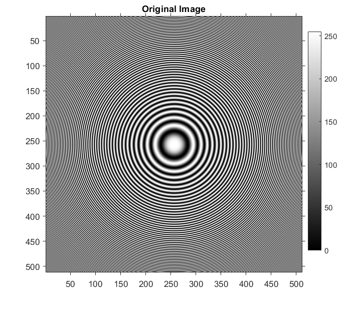
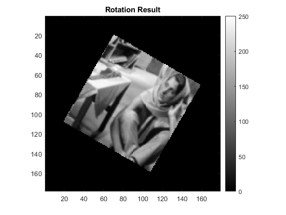

Question1 : Image Resize and Rotation
Contents
myShrinkImageByFactorD
We aim to demonstrate the Moire Effect in this case by undersampling the original image by 2 and 3 times. The expected result is that the Moire Effect would appear more pronounced when undersampled by 3 times when compared to 2x.
Every alternate pixel has been selected in the middle image and every third pixel has been selected in the right image. Moire Effect is evident here and as d = 3 has a higher level of undersampling, the effect is better observed there
myBilinearInterpolation
We enlarge the image in this case by using the Simple Bilinear Interpolation technique, wherein we've specifically given inputs to our function such that an image of size [m,n] is enlarged into an image of size [3m-2,2n-1]
We've implemented Bilinear interpolation by reading 2x2 squares across the image matrix and interpolating the values for pixels midway and storing the new 4x3 rectangles obtained in this case in a new matrix. The computation in this case is quite straightforward, with the pixel value midway being a convex combination of pixel values at the edges of the unit square.The height has been roughly increased to 3x and width to 2x.
myNearestNeighborInterpolation
We enlarge the image in this case by using the Nearest Neighbor interpolation technique, wherein we've specifically given inputs to our function such that an image of size [m,n] is enlarged into an image of size [3m-2,2n-1]
We've implemented Nearest Neighbor interpolation by reading 2x2 squares across the image matrix and interpolating the values for pixels midway and storing the new 4x3 rectangle obtained in this case in a new matrix. The height has been roughly increased to 3x and width to 2x
myBicubicInterpolation
We enlarge the image in this case by using the Bicubic Interpolation technique, wherein we've specifically given inputs to our function such that an image of size [m,n] is enlarged into an image of size [3m-2,2n-1]

We've implemented Bicubic interpolation by reading 2x2 squares across the image matrix and interpolating the values for pixels midway and storing the new 4x3 rectangle obtained in this case in a new matrix. For each unit square, a bicubic in x,y is fitted to the square using derivative formulas as given in the slides. The 16 equations were solved to obtain 16 coefficients using simple matrix multiplications to give us the bicubic equation for each unit square. The image was padded on all 4 sides with the edge data being repeated. The height has been roughly increased to 3x and width to 2x
Analyse all the enlargements
We will analyse the results of the 3 methods obtained above using the jet colormap to compare the performance of all the methods
Bicubic gives the best that is the smoothest results compared to bilinear interpolation, as a polynomial function is much smoother than a linear function. Also, nearest neighbor gives the worst results as expected, as it doesn't predict new values midway, it just replicates values hence gives rougher edges thus a bad picture quality.
myImageRotation
We will rotate the image clockwise by 30 degrees in this part
The image has been rotated in the clockwise direction by rotating the pixels of the final image anti clockwise by 30 degrees and finding the value there using bilinear interpolation. One could interpret this as basically rotating the entire grid anticlockwise by 30 degrees